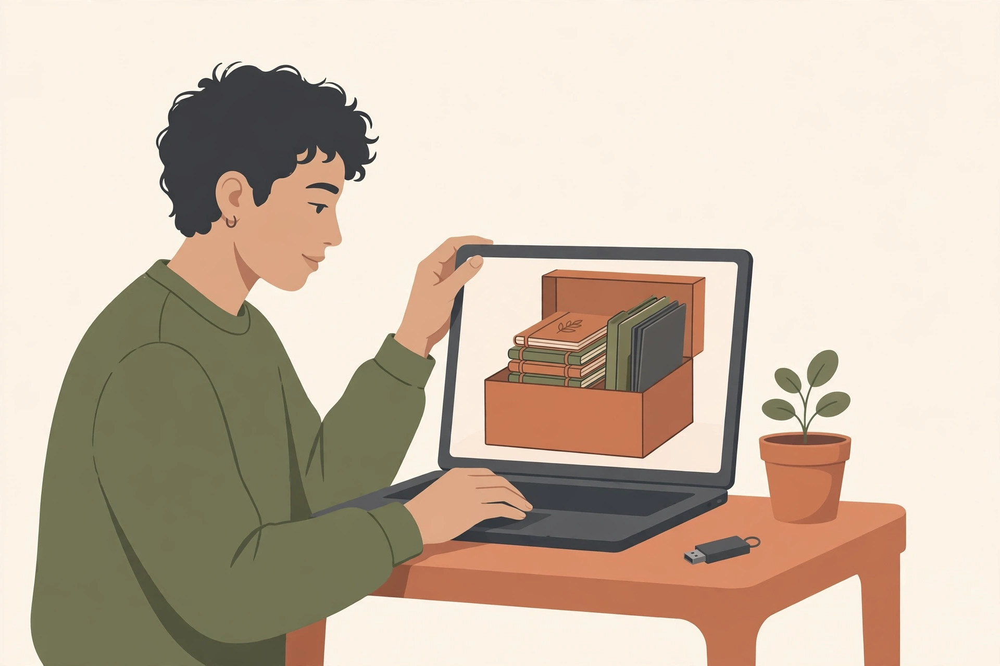
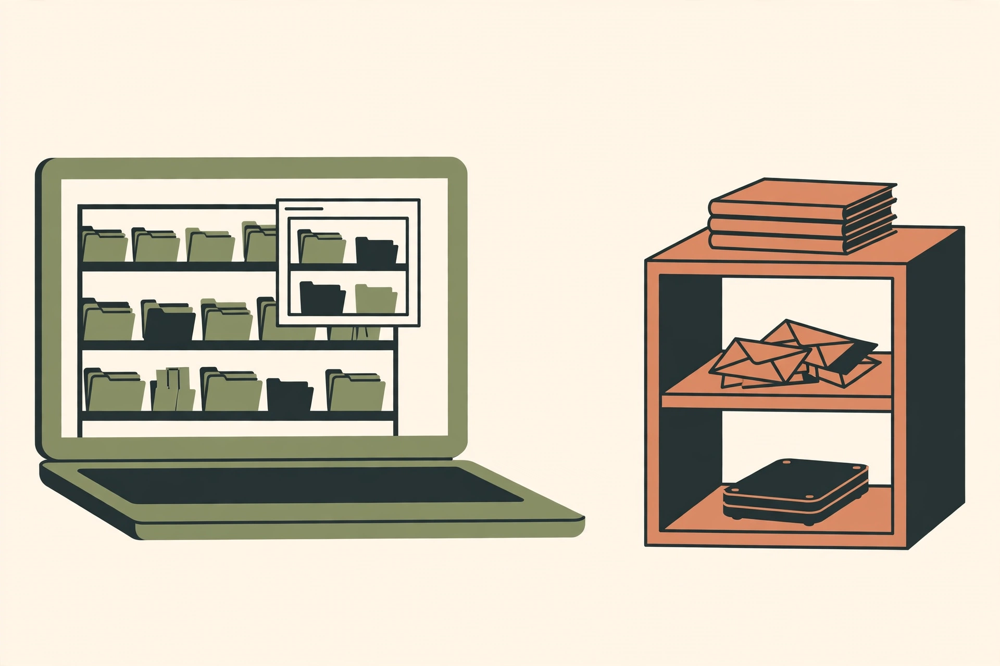

作ったプログラムや原稿をしまう「置き場」と、書くための「編集画面」と、作ったものをすぐ見せる「公開の仕組み」。その全部が、自分のパソコンの中にそろいます。ネットがなくても、アカウントを作らなくても使えます。
十数秒で、置き場と編集の準備が整います。用意するものはアプリ1個だけです。
普段の VS Code からそのままつないで書けます。ない機械では、ブラウザの編集画面も使えます。
置き場にしまうと履歴が残ります。作ったサイトは、その場で表示して確認できます。

学校でアカウントが作れない
生徒全員分の登録は大変で、そもそも許可が下りないこともあります。
ネットがない場所では使えない
閉じたネットワークの現場や、災害のときには、クラウドの道具は止まってしまいます。
大事なものが外にある不安
原稿やソースが遠くのサーバーにあると、無くなったときの心配が残ります。
この道具は、その3つを「自分のパソコンの中で完結させる」ことで解きます。データはずっと手元にあります。
アプリの中には小さな「箱」が入っていて、その中で置き場や編集画面が動きます。そして、あなたの作ったものは、箱とは別の「データ」として置かれます。
置き場、編集画面、公開の仕組みが入っています。壊れたら作り直せます。Mac でも Windows でも動きます。
作ったもの全部。原稿、ソース、写真、データベースの中身まで。守るのはこれだけです。

パッケージには Windows 版と Mac 版が一緒に入っていて、データは別にあります。だから、どちらの機械に挿しても、同じ置き場が開きます。
データは1つにまとまっているので、別の場所にコピーすれば、それでバックアップ完了です。
新しい版が出ても、まず中身を調べて、報告を見て、よいと言ってから更新します。ネットのない場所へは、更新を持ち込むこともできます。
箱の中は本物の Linux です。学習や実験で壊しても、箱を作り直せば元通り。データは無事なままです。
プログラムを書く練習、Linux の学習、その相方として。メインの道具は普段の VS Code のままで、生徒の機械にサーバーを用意する必要がありません。
ミューズさんのような AI が、作業の置き場として使えます。人と AI が、同じ置き場を見て一緒に作業できます。
ネットに繋げない場所でも、文書とデータの置き場と、作ったものの公開ができます。
自分の原稿やソースを、自分の手元に置いておきたい人に。クラウドに依存しない置き場です。
USB に入れて持ち歩けば、教室でも自宅でも、同じ続きから始められます。
状態：開発中です。価格と発売の時期は、まだ決まっていません。仕組みの詳しい数字（速さや大きさの実測）を知りたい方には、技術版のページも用意しています。
開発の様子と、発売が決まった時のお知らせは、Lyre3 Games のサイトと SNS（Facebook／Threads）で出します。今は、作っている様子を見守っていただければうれしいです。